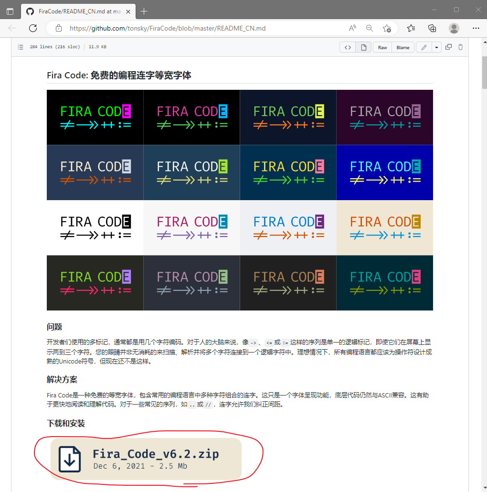
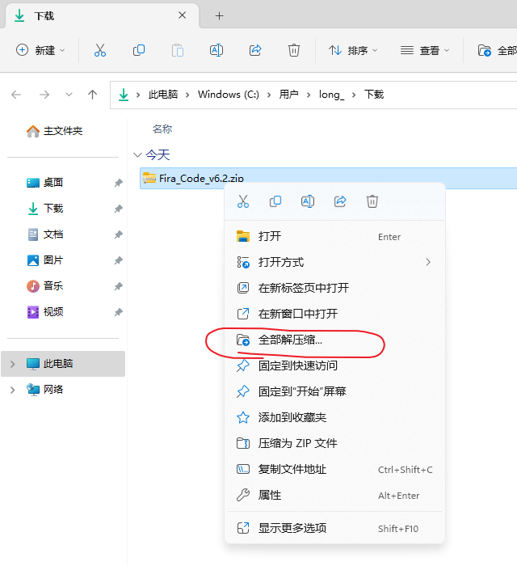

Windows安装字体
本文以安装字体 Fira Code 为例，讲解Windows如何安装字体。
1、找到字体所在的网站，本文中 Fira Code 的官方网址为： https://github.com/tonsky/FiraCode/blob/master/README_CN.md
2、点击上图中圈红的下载按钮，开始下载
3、下载完成后，找到浏览器的下载页面，在文件夹中显示已经下载好的文件
4、找到下载好的压缩包
5、右击压缩包，全部解压缩
6、点击“提取”按钮
7、找到并打开解压后的Fira_Code_v6.2文件夹下的ttf文件夹
8、选中并右击所有字体文件，点击“安装”
9、等待进度条完成，字体就安装好了